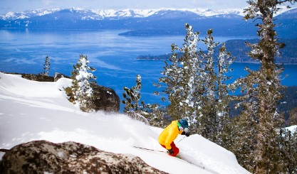

For the past seven years I have competed in track and field. Its an amazing sport and I meet so many great people each season. I typically compete in the 300m Hurdles, 400m, 4x400 relay, and 4x100m relay. This year I once again made varsity but just missed running a qualifying time in Hurdles and the 4x400 relay for the state meet. However, I'm super excited for next season and cant wait to have more fun.
For winter break my family went to Tahoe with our family friends and skied for a couple days. It was a lot of fun and nice to be back on the slopes since I havent gone skiing in a couple years. It was great to have some family time and hang out with friends. I definitely got a lot better at skiing and learned some new tricks, hopefully we'll go back soon.